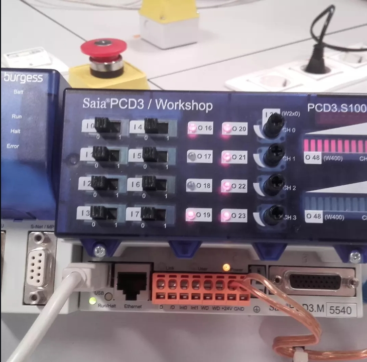

A Saia Burgess PCD3 sorozat a svájci Saia-Burgess Controls (ma Honeywell) egyik legnépszerűbb
moduláris ipari PLC-je. A PCD3.S100 workshop változat oktatási és tesztkörnyezetbe
optimalizált — beépített I/O LED kijelzőkkel, kapcsolható bemenetekkel és analóg kimenetekkel,
amelyek kézzel is vezérelhetők. A programozás a Saia Fupla Editor szoftverben
történik, amely FBD (Function Block Diagram), IL (Instruction List) és Ladder nyelvet is támogat.
A PCD3-at főleg épületautomatizálásban, parkolórendszerekben és ipari folyamatvezérlésben
alkalmazzák — ahol a megbízhatóság és a rugalmas kommunikáció elsődleges szempont.
Saját fotók — hardver és program

Saia PCD3/Workshop · PCD3.S100 · I0–I7 bemenetek · O16–O23 kimenetek · S-Net/MPI · USB · Ethernet · PCD3.M 5540 CPU
I/O kapcsolók és LED-ek közvetlen teszteléshez, oktatáshoz
Részletes ismertetők
Saia Fupla Editor — programozási környezet▸
A Saia Fupla Editor az IEC 61131-3 szabványt követi, és a következő programnyelvet támogatja:
• FBD (Function Block Diagram) — grafikus, funkcioblokk alapú programozás. Ezt használom leginkább: blokkokat húzunk a vászonra, összekötjük a jeleket. Nagyon átlátható komplex logikánál is.
• IL (Instruction List) — szöveges, assemblyszerű language. Régebbi programoknál vagy teljesítménykritikus részeknél hasznos.
• Ladder Diagram — ha valaki Siemens vagy Omron háttérből jön, ez az ismerős. FBD-vel vegyes programban is alkalmazható.
• SFC (Sequential Function Chart) — állapotgép alapú, egymás után következő lépések vezérlésére.
A Fupla Editor egyik erőssége az online monitoring: csatlakoztatva a PLC-hez, a blokkokban valós idejű értékek jelennek meg — látod, hogy melyik funkcioblokk aktív, milyen értéket tárol épp a számláló. Debug módban egy adott szimbólum értéke force-olható is.
S-Net, Ethernet, BACnet — kommunikáció▸
A Saia PCD3 kommunikációs képességei kiemelkedők az árfekvéséhez képest:
• Ethernet (RJ45) — Modbus TCP master/slave, BACnet/IP (épületautomatizálás standard protokollja), HTTP szerver beépítve. A PLC webszerverén keresztül böngészőből is monitorozható a rendszer állapota.
• S-Net / MPI (DB9) — Saia saját hálózati protokollja, elosztott PLC rendszerekhez. Több PCD3 master-slave topológiában kommunikálhat.
• USB — programozáshoz, firmware frissítéshez.
A BACnet/IP protokoll megkülönbözteti a Saia PCD-t a legtöbb kis/közepes PLC-től: ez az épületautomatizálás iparági szabványa, amelyen HVAC rendszerek, tűzjelzők és biztonságtechnikai rendszerek kommunikálnak. Ezért alkalmazzák a Saia PCD-t irodaházakban, szállodákban és kórházakban.
Memóriaterületek és adatkezelés▸
A Saia PCD memóriastruktúrája más mint a Siemens vagy Omron megközelítés:
• Register (R) — 32-bites egész számok, 0–9999-ig. Számlálók, mérési értékek, setpointok tárolására. A programban R0, R100 stb. hivatkozással érhető el.
• Flag (F) — 1 bites logikai változók, belső jelzésekhez. F0–F8191 • Input / Output (I / O) — fizikai I/O csatornák. I0–I7 az alapkártyán, bővítőkkel tovább.
• DB (Data Block) — strukturált adatterületek, pl. receptek, mérési napló tárolásához.
• Timer (T) / Counter (C) — dedikált időzítő és számláló területek, T0–T2047, C0–C2047
A remanens (power-fail safe) területek külön konfigurálhatók — áramkimaradás után ezek megmaradnak. Fontos például egy parkolórendszernél, ahol a pillanatnyi autószám nem nullázódhat le véletlenül.
FBD funkcioblokkok — amit a programban látunk▸
A Fupla Editor FBD könyvtárának leggyakrabban használt blokkjai:
• Up/Down Counter (CTUD) — felfelé és lefelé számol, Set előbeállítható értékre ugrik, IC (initial count) nulláz. A kimenet Q 1, ha a számláló ≥ preset.
• Comparator (Cmp >=) — két érték összehasonlítása. Ha az első ≥ a másodiknak, a kimenet 1. Több komparátor lépcsőzésével fokozatos kijelzés valósítható meg (pl. parkolótelítettség 25%, 50%, 75%, 100%).
• Timer (TON / TOF / TP) — bekapcsolási, kikapcsolási késleltetés, vagy impulzusgenerátor. A TV (time value) a beállított idő, t a már eltelt idő.
• Pulse — egyetlen impulzust generál a bemenet felfutó élére. Sorompóvezérlésnél: egy gombnyomás = egyetlen rövid motorvezérlő jel.
• SR / RS Flip-flop — Set-Reset memória. Akkor hasznos, amikor egy állapotot meg kell tartani, amíg valaki szándékosan nem törli.
A blokkok között a signal flow (jelfolyam) vonalakkal van összekapcsolva. A Fupla Editor automatikusan kezeli a végrehajtási sorrendet — a blokkokat sorban hajtja végre bal→jobb, felülről lefelé.
PCD3 vs. más PLC-k — mikor válaszd?▸
A Saia PCD3 nem véletlenül él él még ma is az épületautomatizálási piacon:
• BACnet/IP natívan — más PLC-knél (Siemens, Omron) ez drága add-on. Saia-nál beépített.
• Webszerver beépítve — böngészőből elérhető monitoring és vezérlés IT infrastruktúra nélkül.
• Workshop tábla — az S100 tanulási célra ideális: a beépített kapcsolók és LED-ek lehetővé teszik, hogy valódi kimeneteket láss, fizikai berendezés nélkül is.
• Hosszú rendelkezésre állás — a Saia PCD3 modulok 10+ éve elérhetők, visszafelé kompatibilis a régi programokkal.
Ahol nem a legjobb választás: gyors mozgásvezérléshez (ms alatti ciklus kell), kis I/O-ra (CP1L olcsóbb), ha a Siemens TIA Portal ökoszisztéma fontos.
PCD3.S100 vs. CP1L vs. S7-1200
Szempont
Saia PCD3
Omron CP1L
Siemens S7-1200
BACnet/IP
natív
nincs
add-on modul
Webszerver
beépített
nincs
opcionális
Programozás
Fupla Editor
CX-Programmer
TIA Portal
Ár (CPU)
€400–800
€150–400
€300–600
Mozgásvezérlés
nem erőssége
pulse output
motion modul
Épületautomatizálás
elsődleges piac
használható
használható
Oktatási változat
PCD3/Workshop
nincs dedikált
SIMATIC ET200
Ökoszisztéma
Saia/Honeywell
Omron
nagyon széles
Személyes tapasztalat
A Saia PCD3-mal való munka megmutatta, hogy az FBD programozás milyen hatékonyan alkalmazható
komplex vezérlési logikánál. A parkolórendszer programban egy fel/le számláló, négy komparátor
és két pulse blokk együttesen valósítja meg a teljes sorompó- és kijelzővezérlést — áttekinthető,
karbantartható kód, amit más mérnök is könnyen megért. A Fupla Editor online monitoring módja
élesben különösen hasznos: anélkül hogy a gépet leállítanád, látod mit csinál épp a program.
A Saia PCD3 Workshop tábla pedig ideális volt arra, hogy a programot valódi I/O-n tudjam tesztelni
— a beépített kapcsolók és LED-ek tökéletesen helyettesítik a szenzorokat és aktuátorokat egy
fejlesztési fázisban.